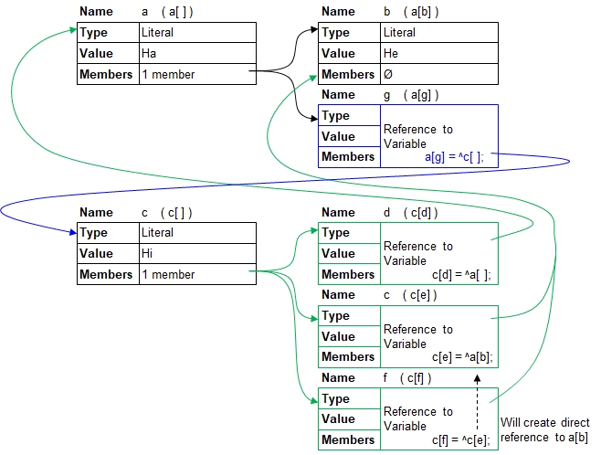

Introduction
The following exmaple shows how a simple reference is designed and describes how to use the '^' symbol to do a reference.

a[] = Hello;
ref1[] =^ a[]; // ref1[] references a[]
a[] = Hi;
echo( a[],", ",ref1[] ); // Outputs "Hi, Hi"
ref1[] = He;
echo( a[],", ",ref1[] ); // Outputs "He, He"Hi, Hi
He, He